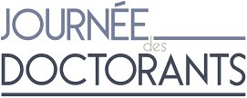
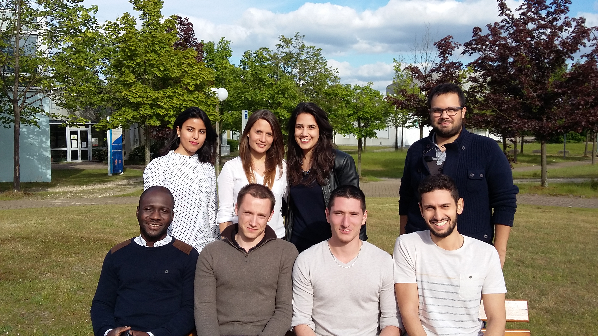

<section id="greeting" class="wrapper  special" style="text-align: justify;  text-justify: inter-word;">
  <div class="inner mediumwidth">
    <header class="major">
  <p >
    <strong>In the past</strong>, the PhD Days have been organized each year by the 
    <strong><a href="{{site.url}}/index-en">ADDED</a></strong> association(
    <em>Association des       Doctorants et Docteurs des Ecoles Doctorales PSIME 
        et MIIS sur les sites universitaires de Rouen et le Havre</em>) 
        with the financial support of the
       former <strong>SPMII</strong> doctoral school from the 
       region Haute-Normandie.  This event took place upon one day from year 
       to year either in Saint-Etienne du Rouvray, Technopole du Madrillet, 
       Université de Rouen Normandie, or in Le Havre, Université Le Havre 
       Normandie. Therefore, the archives on this website are related to 
       the previous PhD Days organized from the former SPMII doctoral school.
  </p>
  <p >
    <strong><a href="http://assoc-optic.fr/?lang=fr">OPTIC
    </a></strong> association (<em>Organisation Pour les DocTorants Interdisciplinaires 
    de Caen</em>), represents the PhD students from the PSIME and MIIS doctoral 
    schools, as qoted above, as well as the <em>NBISE</em> doctoral school
    (<em>Biologie Intégrative, Santé, Environnement</em>), The association have 
    also organized a similar days twice a year, in the past few years. 
    Those days took place in Caen for the PhD students from the
    <strong>SIMEM doctoral school</strong>(the PhD students from 
    Cherbourg were also concerned). 
  </p>
  <p >
    The big <strong>innovation</strong> of 2017 is to <strong>gather both 
    doctoral schools (PSIME and MIIS)</strong>, as well as the four sites
    (<strong>Rouen-Caen-Le Havre-Cherbourg</strong>) on one event taking 
    place on <strong>two days</strong> : <em>PhD Days of PSIME & MIIS
    </em>. The gathering comes from the fusion and splitting of the SPMII and 
    SIMEM doctoral schools (related to the creation of the ComUE Normandie 
    Université), which correspond now to the regional doctoral schools: 
    PSIME and MIIS.
  </p>
  <p >
    The PhD Days are now <strong>organized by the associations 
      <a href="{{site.url}}/index-en">ADDED</a> et 
    <a href="http://assoc-optic.fr/?lang=fr">OPTIC</a></strong> and are 
    sponsored by the PSIME and MIIS doctoral schools.
  </p>
  <p >
    As from the previous years, the event will take place alternatively on each
    site, from year to year. 
  </p>
  <p >
    This event gives the opportunity to all the PhD students to present their 
    work in an academic fashion for public audience through <strong>
      oral presentations/posters.
      </strong>
    A <strong>round table</strong> is also organized. Generally, it involves 
    themes about employment which allows a prolific exchange between companies,
     researchers, and post-doctoral fellows. Finally, a <strong>cocktail</strong>
     is proposed during which <strong>a poster prize and four oral presentation 
       prizes are awarded</strong> in the four main disciplines of the Doctoral 
       School (Physics, Engineer Science, Mathematics, and Science of 
       Technologies of Information and Communication). In the last years, 
       the poster prize was 100€, and the oral presentation prizes were 200€ 
       for each discipline with 1/3 of the PhD students from the SPMII doctoral 
       school. We hope a similar, and even a higher, number of students from 
       the new PSIME and MIIS doctoral schools.
  </p>
  <p >
    This occasion is presented as <strong>an excellent exercise for the science 
    vulgarization </strong> of PhD students in front of a non-related scientific public. 
    This event can also be added to the PhD student resume. Also, it is 
    considered as a training for job interviews.
  </p>
  <p >
     A call for papers/posters is usually sent between January-February through 
     the diffusion mailing list of the doctoral schools. A detailed plan is sent
      to PhD students when the registration is closed. Furthermore, each year 
      the JDD is <strong>organized by and for the PhD students</strong>.
       If you intend to organize this event with other PhD students of the 
       Doctoral Schools PSIME/MIIS, please contact us
       (<a href="{{site.url}}/contact-{{page.lang}}/">contact</a>).
  </p>
  <h1 style="color: black; text-align: left">History</h1>
  <ul>
    <li> <a href="{{site.url}}/jdd2017-{{page.lang}}/">2017.</a></li>
    <li> <a href="https://sites.google.com/site/jddspmii2016/">2016.</a></li>
    <li><a href="https://sites.google.com/site/jddspmii/">2015.</a></li>
  </ul>
  <p>
    <h1 style="color: black; text-align: left">Organization committees</h1>
    <div class="2u" ><span class="image fit"></span></div>
    <div class="box alt">
      <div class="row uniform 50%">
        <div class="4u"><span class="image fit">
          <figure>
            <a href="../images/jdd/2017-rouen.jpg">
          
          </a>
          <figcaption><h1 style="color: black">2017 - Rouen. <br> 
            <a href="https://drive.google.com/drive/folders/0ByYVNAWsGuQrQXFxdHFZOEhXUms?usp=sharing">Images Archive</a></h1></figcaption>
          </figure>
        </span>
      </div>
        <div class="4u"><span class="image fit">
          <figure>
            <a href="../images/jdd/2016-le-havre.JPG">
          
          </a>
          <figcaption><h1 style="color: black">2016 - Rouen. <br> 
            <a href="https://drive.google.com/drive/folders/0B0e5-CpCGTNXRGV3b2ppLTFaRnc?usp=sharing">Images Archive</a></h1></figcaption>
          </figure>
        </span>
      </div>
        <div class="4u"><span class="image fit">
          <figure>
            <a href="../images/jdd/2015-rouen.jpg">
          
          </a>
          <figcaption><h1 style="color: black">2015 - Rouen. <br>
            <a href="https://drive.google.com/drive/folders/0B0e5-CpCGTNXYUlZSXppRUJJR0U?usp=sharing">
            Images Archive</a>
          </h1></figcaption>
          </figure>
        </span></div>
      </div>
    </div>
  </p>
</header>

</div>
</section>
